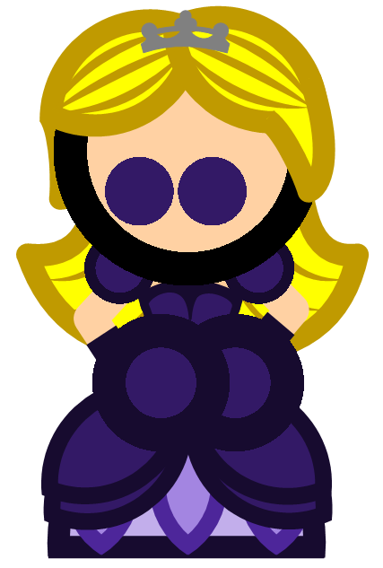

RAINBOW
| Cuento | Trama | Protagonista |
|---|---|---|
| De la verdad sobre Ellie | Ellie, la princesa del reino, es amiga de una aldea de pequeños seres llamados "Los Constructores", quienes la ayudaron a regresar cuando se perdió en el bosque. Pasados algunos años, la guerra en el reino llegó;. Ellie debe convencer a todos de que Los Constructores existen antes de que el rey use su última estrategia para ganar la guerra: quemar el bosque. |
 |
| Alas mecánicas | En una isla flotante de estilo "steampunk", todos sus habitantes se han marchado. De todos los robots que se quedaron en la isla, únicamente permanece uno activado, quien está buscando construir unas alas para aprender a volar. |
 |
| Niñez eterna | El dios de la juventud, que se acerca a cierto planeta cada 92 años, concede tiempo adicional de vida a las personas de buen corazón que se lo pidan. Su rutina, que había durado siglos, cambió desde que una niña solitaria con un corazón puro le pidió un deseo particular: tener un poco de compañía. |
 |